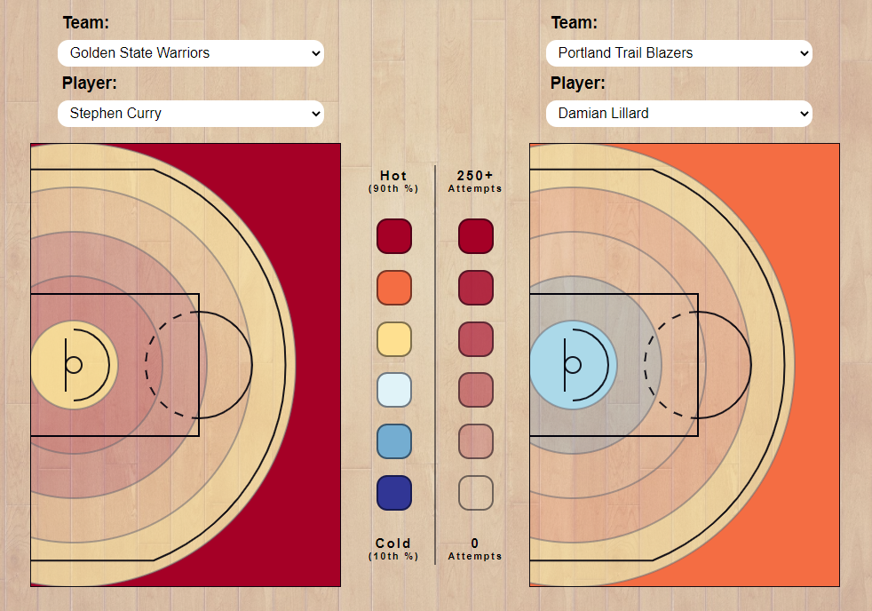
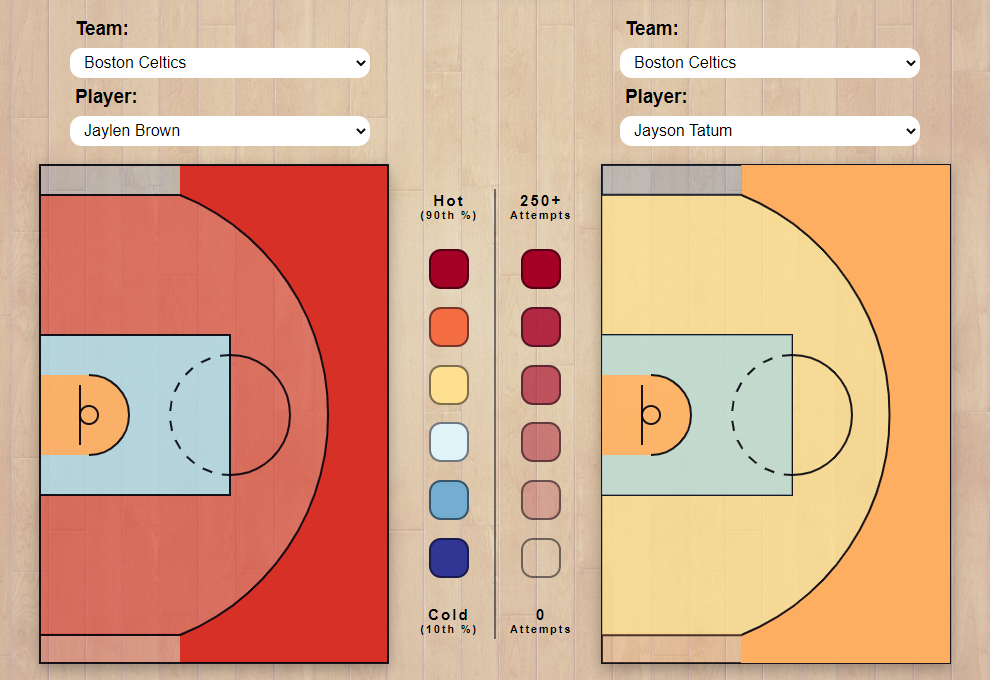

My initial intent with this visualization was to get an idea of which players were better at shooting from certain areas of the basketball court. Obviously, I would need to display a basketball court on the page, so this was the first thing I started working on.
When I found the data set on NBA.com, it was split into two different versions. The first was shooting percentages from each traditional zone on the court (restricted area, inside paint, outside paint, corner three, above the break three). The second was by distance, with intervals of five feet.
My first design was to visualize the shooting percentages by the natural zones on the court. This is the first view you see on the site. I got the different colors to appear based on which player was selected, but quickly realized this approach was somewhat flawed. The problem was that a low-volume player might have a much higher percentage from a particular zone on the court than a high-volume player. That would make this visualization misleading.
I decided the best solution was to add the opacity to each zone corresponding with the number of shots from the zone. This allows the user to quickly determine the importance of the percentage from this zone. It also approximates the overall volume of shots the player takes in general, which was an unintended benefit of adding the opacity.
Once the first part of the visualization was working to my satisfaction, I implemented the same functionality to the second part, showing shooting percentages by distance from the rim. In order to do this I needed to draw the same basketball courts on the page, but add a layer of circles representing each of the new zones.
Lastly, I added buttons to switch the view in order to not overwhelm the user with too much at one time. Additionally, I made the player selection easier by giving the user the ability to select a team to choose a player from.
The color scheme of the data was an important design choice. I decided to make the highest shooting percentages a dark red color and the lowest shooting percentages a dark blue color. These colors are typically associated with being 'hot' or 'cold', so this color scheme makes a lot of sense.
I mentioned the opacity of the shooting zones above, but would also like to mention them here. The opacity corrensponds with the number of attempts a player has from the area. This makes it easier to spot volume and percentage at the same time and make an easy judgment on what the data says.
I decided to make the page have two courts side-by-side in order to be able to compare two different players easily. If this was not the case, it would be nearly impossible to make these player comparisons, so this was an important design decision.
I also touched on the 'zones' versus 'distances' display modes above. Since my data set had this data, I decided to have both available. However, when they were both on the page at the same time, there was too much going on. I added the buttons to switch which one is on the screen to simplify the view and not overload the user's eyes.
This data visualization was very interesting to explore. For instance, most NBA fans believe that Stephen Curry and Damian Lillard are neck and neck when it comes to shooting, but when the data is displayed side-by-side you can see a difference. Steph is still the best.

Here I compared the two young stars on the Celtics, Jaylen Brown and Jayson Tatum. The data shows that Jaylen Brown has shot better from the field, even though they have a very similar usage. This means that maybe Brown should be getting more shots.
